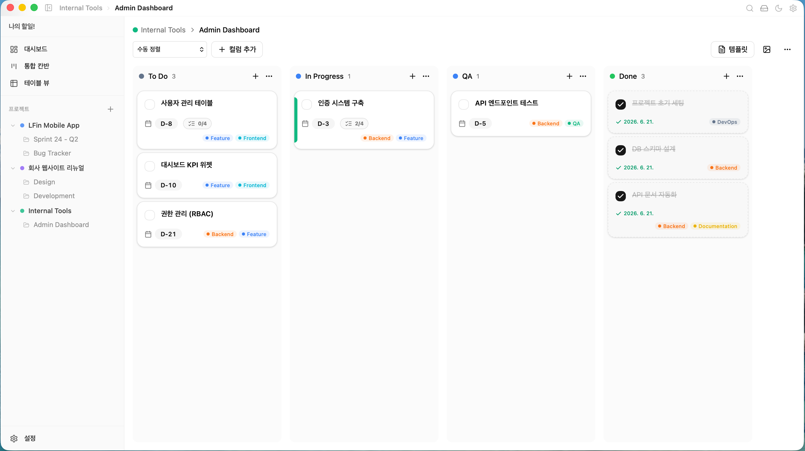
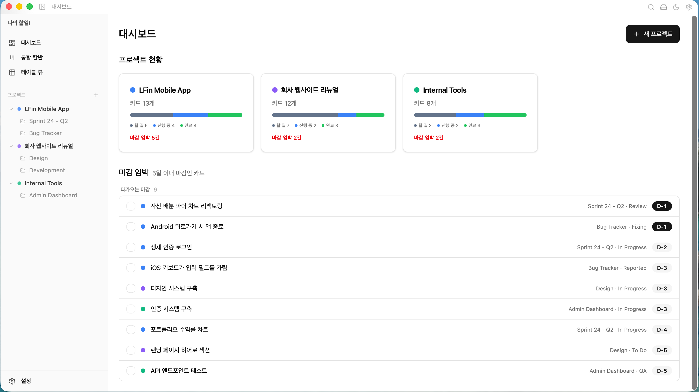
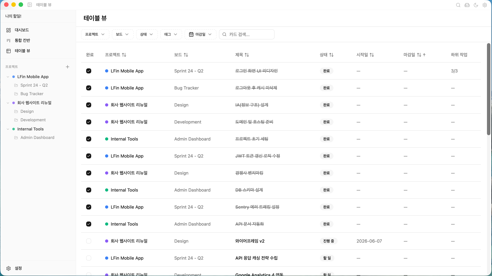
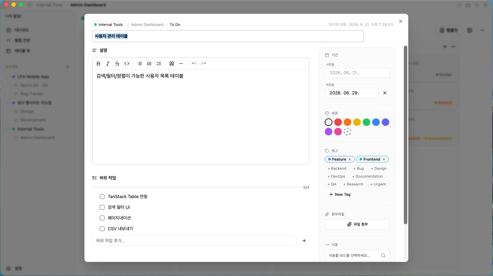
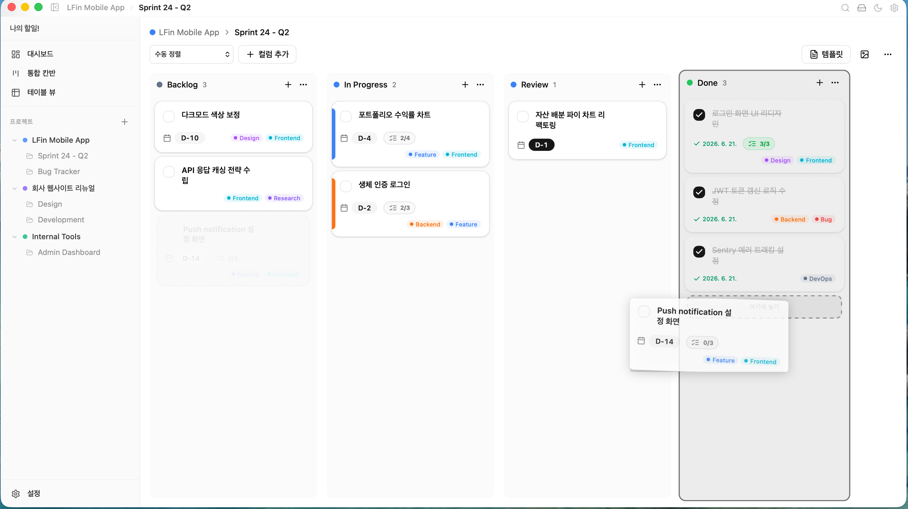

Your cozy, offline Kanban board.
A fast desktop app where your tasks stay on your machine — no account, no internet, no compromise.
Offline · No account · Free & open source



A fast desktop app where your tasks stay on your machine — no account, no internet, no compromise.

A focused Kanban tool that respects your data and your keyboard.
Board, table, a unified cross-project view, and a dashboard with deadline focus.
Rich text, subtasks, tags, color labels, deadlines, and file attachments.
A Cmd+K command palette with full-text search and customizable shortcuts.
Light/dark themes, 10 accent colors, board backgrounds, and card templates.
A local SQLite database with automatic backups. Nothing leaves your machine.
English and Korean included, with a structure built for adding more languages.




Free and open source. Pick the installer for your platform.
xattr -dr com.apple.quarantine /Applications/Kabin.app